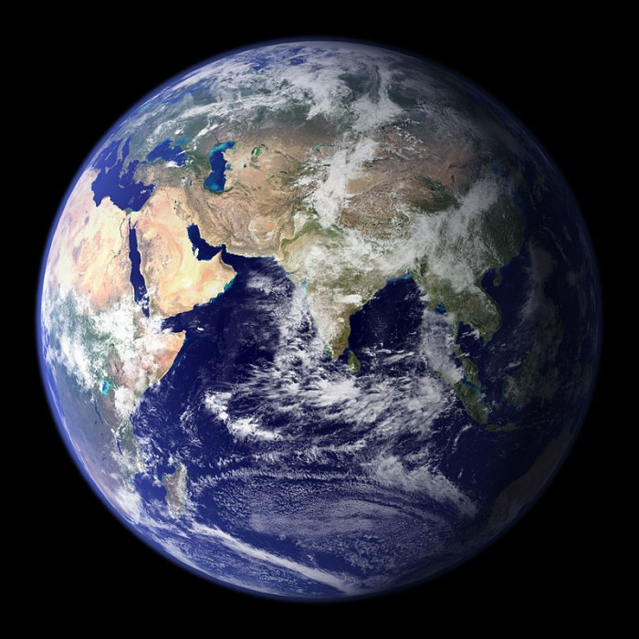
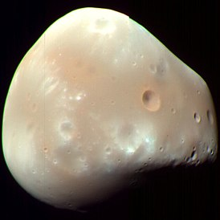
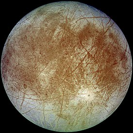
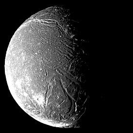
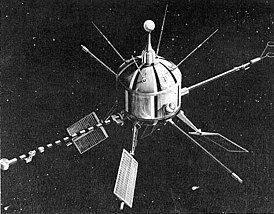
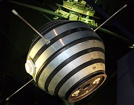

ДОБРО ПОЖАЛОВАТЬ В ДАЛЁКИЙ КОСМОС
| Планети Солнечной Системи | |||||
| меркури |  |
Марс |  |
Уран |  |
| Венера |  |
Юпитер |  |
Нептун |  |
| Земля |  | Сатурн |  |
Плутон |  |
звёздная карта неба
 Звёздная карта — изображение звёздного неба или его части, показывающее расположенные на ней объекты (звёзды, планеты, кометы и т. п.) в определённой системе условных знаков. Как и географическая карта, звёздная карта снабжается координатной сеткой в экваториальной системе небесных координат. Различают рисованные и фотографические карты звёздного неба.
Набор звёздных карт, содержащих смежные участки неба, называется звёздным атласом.
Звёздная карта предназначена для отождествления астрономических объектов на небе с объектами в каталогах, поиска объектов по их координатам. С помощью звёздной карты также могут быть определены приблизительные координаты небесных объектов.
Звёздная карта — изображение звёздного неба или его части, показывающее расположенные на ней объекты (звёзды, планеты, кометы и т. п.) в определённой системе условных знаков. Как и географическая карта, звёздная карта снабжается координатной сеткой в экваториальной системе небесных координат. Различают рисованные и фотографические карты звёздного неба.
Набор звёздных карт, содержащих смежные участки неба, называется звёздным атласом.
Звёздная карта предназначена для отождествления астрономических объектов на небе с объектами в каталогах, поиска объектов по их координатам. С помощью звёздной карты также могут быть определены приблизительные координаты небесных объектов.
Солнце
 Со́лнце (астр. ☉) — одна из звёзд нашей Галактики (Млечный Путь) и единственная звезда Солнечной системы. Вокруг Солнца обращаются другие объекты этой системы: планеты и их спутники, карликовые планеты и их спутники, астероиды, метеороиды, кометы и космическая пыль.
По спектральной классификации Солнце относится к типу G2V (жёлтый карлик). Средняя плотность Солнца составляет 1,4 г/см³ (в 1,4 раза больше, чем у воды). Эффективная температура поверхности Солнца — 5780 кельвин[4]. Поэтому Солнце светит почти белым светом, но прямой свет Солнца у поверхности нашей планеты приобретает некоторый жёлтый оттенок из-за более сильного рассеяния и поглощения коротковолновой части спектра атмосферой Земли (при ясном небе, вместе с голубым рассеянным светом от неба, солнечный свет вновь даёт белое освещение).
Солнечное излучение поддерживает жизнь на Земле (свет необходим для начальных стадий фотосинтеза), определяет климат.
Со́лнце (астр. ☉) — одна из звёзд нашей Галактики (Млечный Путь) и единственная звезда Солнечной системы. Вокруг Солнца обращаются другие объекты этой системы: планеты и их спутники, карликовые планеты и их спутники, астероиды, метеороиды, кометы и космическая пыль.
По спектральной классификации Солнце относится к типу G2V (жёлтый карлик). Средняя плотность Солнца составляет 1,4 г/см³ (в 1,4 раза больше, чем у воды). Эффективная температура поверхности Солнца — 5780 кельвин[4]. Поэтому Солнце светит почти белым светом, но прямой свет Солнца у поверхности нашей планеты приобретает некоторый жёлтый оттенок из-за более сильного рассеяния и поглощения коротковолновой части спектра атмосферой Земли (при ясном небе, вместе с голубым рассеянным светом от неба, солнечный свет вновь даёт белое освещение).
Солнечное излучение поддерживает жизнь на Земле (свет необходим для начальных стадий фотосинтеза), определяет климат.
Спутники в Солнечной системе
| Планета | Спутник | Фотография | Другой спутник | Фотография |
|---|---|---|---|---|
| Спутников у Меркурия, по современным данным, нет, хотя такие предположения выдвигались ранее. | ||||
| В прошлом имели место многочисленные заявления о наблюдении спутников Венеры. Но по современным данным, естественных спутников у Венеры нет. | ||||
| Земля | Луна |  |
Луна | |
| Марс | Деймос |  | Фобос |  |
| Юпитер | Европа |  | Ганимед |  |
| Сатурн | Титан |  |
Рея |  |
| Уран | Ариэль |  | Миранда |  |
| Нептун | Тритон |  |
Ларисса |  |
Луна
 Луна́ — единственный естественный спутник Земли. Самый близкий к Солнцу спутник планеты, так как у ближайших к Солнцу планет (Меркурия и Венеры) их нет. Второй по яркости[комм. 1] объект на земном небосводе после Солнца и пятый по величине естественный спутник планеты Солнечной системы. Среднее расстояние между центрами Земли и Луны — 384 467 км (0,00257 а.е., ~30 диаметров Земли).
Видимая звёздная величина полной Луны на земном небе — −12,71m[5]. Освещённость, создаваемая полной Луной возле поверхности Земли при ясной погоде, составляет 0,25 — 1 лк.
Луна появилась около 4,51 млрд лет назад[6], немного позже Земли. Наиболее популярна гипотеза о том, что Луна сформировалась из осколков, оставшихся после «Гигантского столкновения» Земли и Тейи — планеты, схожей по размерам с Марсом.
Луна́ — единственный естественный спутник Земли. Самый близкий к Солнцу спутник планеты, так как у ближайших к Солнцу планет (Меркурия и Венеры) их нет. Второй по яркости[комм. 1] объект на земном небосводе после Солнца и пятый по величине естественный спутник планеты Солнечной системы. Среднее расстояние между центрами Земли и Луны — 384 467 км (0,00257 а.е., ~30 диаметров Земли).
Видимая звёздная величина полной Луны на земном небе — −12,71m[5]. Освещённость, создаваемая полной Луной возле поверхности Земли при ясной погоде, составляет 0,25 — 1 лк.
Луна появилась около 4,51 млрд лет назад[6], немного позже Земли. Наиболее популярна гипотеза о том, что Луна сформировалась из осколков, оставшихся после «Гигантского столкновения» Земли и Тейи — планеты, схожей по размерам с Марсом.
искусственные спутники земли
| Спутник-1 | Эксплорер-1 | Ariel 1 | Астерикс |
 |
 |
 |  |
День космонавтики
 12 апреля 1961 года советский космонавт Юрий Гагарин на космическом корабле «Восток-1» стартовал с космодрома «Байконур» и впервые в мире совершил орбитальный облёт планеты Земля. Полёт в околоземном космическом пространстве продлился 108 минут[1].
В Советском Союзе праздник установлен указом Президиума Верховного Совета СССР от 9 апреля 1962 года. Отмечается под названием День космонавтики. Этот праздник установлен по предложению второго лётчика-космонавта СССР Германа Титова, который обратился в ЦК КПСС с соответствующим предложением 26 марта 1962 года[2].
В этот же день отмечается Всемирный день авиации и космонавтики согласно протоколу (п. 17) 61-й Генеральной конференции Международной авиационной федерации, состоявшейся в ноябре 1968 года, и решению Совета Международной авиационной федерации, принятому 30 апреля 1969 года по представлению Федерации авиационного спорта СССР[3].
12 апреля 1961 года советский космонавт Юрий Гагарин на космическом корабле «Восток-1» стартовал с космодрома «Байконур» и впервые в мире совершил орбитальный облёт планеты Земля. Полёт в околоземном космическом пространстве продлился 108 минут[1].
В Советском Союзе праздник установлен указом Президиума Верховного Совета СССР от 9 апреля 1962 года. Отмечается под названием День космонавтики. Этот праздник установлен по предложению второго лётчика-космонавта СССР Германа Титова, который обратился в ЦК КПСС с соответствующим предложением 26 марта 1962 года[2].
В этот же день отмечается Всемирный день авиации и космонавтики согласно протоколу (п. 17) 61-й Генеральной конференции Международной авиационной федерации, состоявшейся в ноябре 1968 года, и решению Совета Международной авиационной федерации, принятому 30 апреля 1969 года по представлению Федерации авиационного спорта СССР[3].